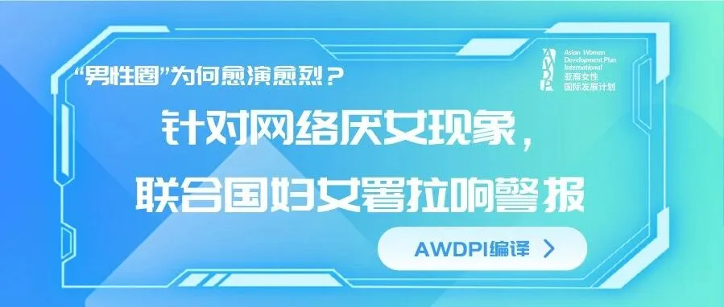
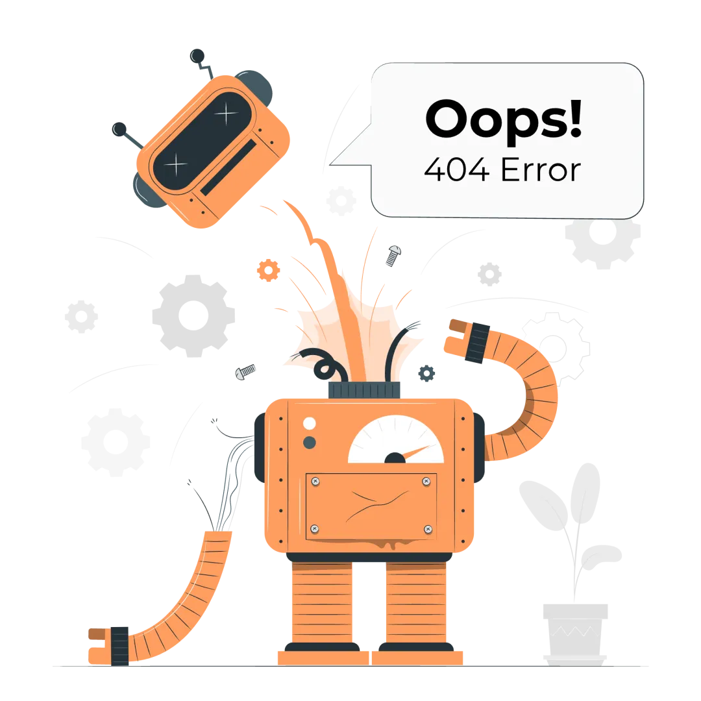

联合国妇女署警告称，网络社群中的“男性圈”不断扩张，正对性别平等构成严重威胁。作为致力于消除性别歧视的联合国机构，妇女署认为“男性圈”是具有危害性的线上团体，其存在日益影响着人们在现实世界中的态度、行为与决策。
联合国妇女署指出，全球网民规模已超过55亿，意味着几乎所有人都会使用社交媒体，数字平台已成为人们沟通交流的中心枢纽。
然而，这些平台正沦为散播厌女思想与仇恨的武器。原本仅存在于网络论坛边缘地带的“男性圈”（manosphere），如今正将其危害蔓延至校园与职场，甚至开始破坏亲密关系。
联合国妇女署消除对妇女及女童的暴力部门负责人Kalliopi Mingeirou表示：“我们注意到越来越多的男性青年和青少年向网络达人寻求与男性身份相关的指导，比如约会、健身、人父责任等等。”
年轻男性试图寻求让自己更自信、更安心的回应，在此过程中，他们会遇到宣扬“力量”（strength）的网络社群，而这些群体会传播扭曲的男子气概并且煽动厌女情绪，让这些有害的思想大行其道。
年轻男性在网络世界寻求“认同和归属”
Mingeirou向联合国新闻（UN News）表示：“这些网络空间利用年轻男性的不安和他们对归属感的需求，散播贬损妇女和女童社会地位的言论。这些观点往往充斥着厌女情绪，比如抹黑女权活动人士，建构其负面形象。”
据联合国妇女署合作伙伴、知名男性健康组织“十一胡子月基金会”（Movember Foundation）数据显示，在网络上约三分之二的年轻男性经常与宣扬男子气概的达人交流互动。
尽管其中有些内容确实提供了帮助，但多数仍在宣扬极端言论和性别歧视 ，不断固化“男性是女权主义和社会平权变革的受害者”这一错误认知。
联合国秘书处最新发布的《消除一切形式暴力侵害妇女和女童行为》的报告指出，抵制女性主义、将女性塑造为“控制欲强”、“危险性高”的形象是各类“男性圈”的共同特征。
而社交媒体的算法机制为具有煽动性的内容和制造对立的观点推波助澜，导致这类扭曲事实的叙述不断扩大声量。
厌女之毒，无分男女，皆受其害
Mingeirou强调，网络的匿名性 为传播性别歧视与仇恨言论大开方便之门。她指出，此类言论不仅损害青少年的身心健康，还会“在整体上严重威胁民主制度”。

“数字平台带来的风险与威胁不断侵蚀着妇女和女童心中的安全感。于是我们时常目睹女性记者和女性政治家受网络影响所累而选择退出公共讨论。”
Mingeirou进一步指出，刻板印象同样会引发男性焦虑并对其造成伤害。她强调必须建立安全的网络空间，让每个人都能获得正确引导，免受厌女思想毒害。
厌女之害蔓延，现实世界承压
蛰伏在网络空间的“男性圈”，其传播的有害观念已经开始侵袭现实世界。在潜移默化中，主流文化与政治领域均受其害。人们开始轻视基于性别的暴力，社会上体现性别歧视的刻板印象也在扎根蔓延。
在极端情况下，厌女思想还会和种族歧视、恐同思想、专制主义等激进思潮相互交织，合流为害。而且，网络空间的厌女思想已经溢出屏幕，向现实社会蔓延。
Mingeirou进一步指出：“越来越多的证据表明，一些在社区中制造大规模枪击事件或极端暴力事件的凶手往往长期活跃于‘男性圈’这样的网络平台。他们传播的厌女观点会和其他极端思想结合，对所有人群构成威胁。”
尽管不同的“男性圈”之间存在分歧，但他们的一大共性在于将“女性主义”视为洪水猛兽，将女性塑造为控制欲强的形象，将男性描述为成社会平权变革的牺牲品。由于算法优先推送煽动性强、极端偏激的内容，“男性圈”所含的思想观念正不断扩散，并且越发受到男性青年和青少年认可。同时，“男性圈”构建的话语体系也不再限于网络世界的一隅，它们悄然影响着人们如何思考、为谁投票以及如何待人。
采取基于人权的应对措施
1995年，北京第四次世界妇女大会通过了《北京宣言》和《行动纲领》。回望这项世界妇女事业发展的里程碑，联合国妇女署表示，厌女思想在网络世界兴起直接威胁着性别平等事业当前取得的进展。
因此，联合国妇女署将采取以下步骤，加大行动力度，对抗有害的数字环境：
收集数据，开展研究：剖析网络仇恨言论的传播与影响。
政策助力，加强管理：健全监管体系，维护数字空间安全。
后续跟进，提供志愿：为网络暴力受害者提供援助。
教导公众，重塑观念：加强教育引导，支持人们摆脱有害的男子气概。
赋能青年，推广平权：增强数字韧性，促进性别平等。
动员媒体，积极担责：呼吁媒体进一步采取措施应对有害的线上团体。
教育为方，防治厌女思想
从根本上说，教育是瓦解厌女思想并铲除其劣根的有效途径。让儿童和青少年参与讨论性别平等、健康的人际关系和数字公民的素养，对防治有害观念滋生至关重要。
“这不仅是为了保护女孩，”Mingeirou指出，“更是要创造一个无论男孩女孩都能健康成长的世界，让孩子们免遭有害的性别观念荼毒。”
免责声明：本文由AWDPI编译，仅供分享参考，观点不代表本组织立场。版权归原作者所有。
原文链接：
https://news.un.org/en/story/2025/06/1164531#:~:text=A%20growing%20network%20of%20online%20communities%20known%20collectively,agency%20dedicated%20to%20ending%20gender%20discrimination%20has%20warned.
参考链接：
https://www.unwomen.org/en/articles/explainer/what-is-the-manosphere-and-why-should-we-care
Intensification of efforts to eliminate all forms of violence against women and girls: Technology-facilitated violence against women and girls: Report of the Secretary-General (2024) | UN Women – Headquarters
https://www.unescwa.org/beijing
译者｜张世嘉
排版&封面｜池一诺
图片｜UN NEWS & Storyset